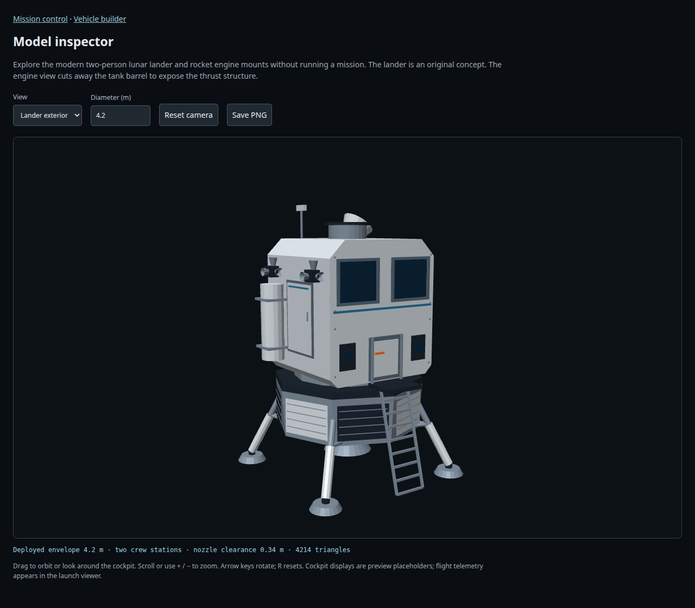

SatelliteSim.jl (ss.jl)
Satellite mission simulation in Julia: launch vehicles, orbital flight, lunar missions, and atmospheric reentry, with an interactive browser interface.

SatelliteSim.jl follows a mission from launch through orbital flight, lunar transfers, and atmospheric reentry. The Julia simulation models vehicle stages, propulsion, flight dynamics, and mission trajectories.
The browser interface provides mission control, a vehicle builder, and a model inspector. Explore the simulation and its spacecraft models, then read the source for the physical models and mission design tools.